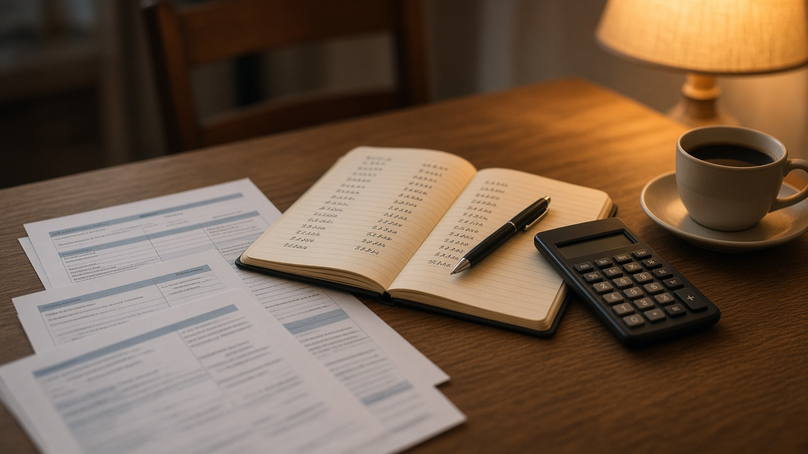

채무조정 신청 직전에 받은 대출이 전체 빚의 30퍼센트를 넘으면 신청 자체가 막혀요
카드값과 대출 이자가 소득을 넘어서면 신용회복위원회 채무조정을 알아보게 되는데, 그 전에 생활비가 모자라 카드나 대출을 한 번 더 쓴 분도 적지 않아요.
이럴 때 신청 직전에 받은 대출이 신청에 영향을 주는지가 가장 궁금하죠.
금융위원회가 11월 4일 보도설명자료에서 신복위 채무조정이 어떤 기준으로 걸러 내는지 구체적인 숫자와 함께 밝혔어요.
빚 때문에 막막한 분이 미리 알고 준비하실 수 있도록 그 기준을 차근차근 정리해 볼게요.
이번에 금융위원회가 설명한 내용이 무엇인지부터 짚어 볼게요
이번 설명자료는 조선일보가 11월 4일 채무조정 신청 직전에 고액의 카드를 쓰거나 고급 승용차를 사는 사례가 있다는 취지로 보도한 것에 대한 해명이에요.
금융위원회는 신용회복위원회가 제도를 악용하는 일을 막고 꼭 필요한 분께 지원이 돌아가도록 여러 장치를 두고 있다고 밝혔어요.
핵심은 세 가지예요.
신청 직전의 대출 비중, 보유 재산에 대한 심사, 카드 사용 내역 점검이에요.
채무조정 제도를 쓰려는 분이라면 이 세 가지가 심사에서 어떻게 보이는지 알아 두시는 게 좋아요.
최근 6개월 신규 대출이 전체 채무의 30퍼센트 이하여야 신청할 수 있어요
금융위원회는 채무조정 직전에 대출이 급증한 경우에는 원칙적으로 채무조정을 신청할 수 없다고 설명했어요.
구체적인 기준은 최근 6개월 이내에 새로 받은 대출이 전체 채무의 30퍼센트 이하인 경우에만 신청이 가능하다는 거예요.
예를 들어 전체 빚이 1억 원이라면 최근 6개월 안에 새로 생긴 빚이 3천만 원을 넘지 않아야 한다는 뜻이에요.
이 계산은 이해를 돕기 위한 예시일 뿐이고, 어떤 대출이 신규 대출로 잡히는지 세부 기준은 상담에서 따로 확인하셔야 해요.
재산이 무담보 채무보다 많으면 신청이 제한돼요
다음은 재산 심사예요.
금융위원회에 따르면 재산평가액이 무담보채무 총액을 초과하면 채무조정 신청을 제한하고 있어요.
고가 자동차를 가진 경우에는 별도로 더 강화된 기준을 적용하는데, 다음 중 하나라도 해당하면 자동차를 먼저 판 뒤에 채무조정을 신청하도록 하고 있어요.
신청일 기준 시세가 4200만 원 이상인 경우, 자동차 담보대출의 원리금 월 상환액이 70만 원 이상인 경우, 청산가치가 2000만 원 이상인 경우예요.
차량이 일에 꼭 필요한 분은 이 기준에 해당하는지 미리 계산해 보시는 게 좋겠어요.

카드 사용 내역도 살펴보고, 채권자인 카드사가 이의를 낼 수 있어요
세 번째는 카드 사용 내역이에요.
신복위는 사치성 물품 구입이나 과소비가 있었는지 확인하려고 카드 사용 내역의 특이사항을 점검하고 있어요.
심사 과정에서 채권자인 신용카드사가 이상 거래 내역에 대해 이의를 제기할 수도 있고요.
다만 금융위원회는 신청 직전에 카드 사용액이 늘어난 것이 실직이나 폐업으로 소득이 줄어서, 또는 생활비가 부족해서 생길 수도 있다고 짚었어요.
그래서 카드 사용액만 보지 않고 소득과 재산, 부양가족, 빚이 생긴 경위를 종합해서 지원이 적정한지 검토한다고 설명했어요.
빚이 부담될 때는 이런 곳에서 먼저 상담받으실 수 있어요
금융위원회는 과다채무로 어려움을 겪는 분이 서민금융진흥원 1397이나 신용회복위원회 1375에서 도움을 받을 수 있다고 안내했어요.
불법사금융 피해를 봤다면 금융감독원 1332에 신고하면 되고, 연이율 60퍼센트를 넘는 대부계약은 원금과 이자 모두 무효라고 밝혔어요.
신청 직전 대출과 카드 사용이 있었다고 해서 무조건 안 되는 것이 아니라 전체 상황을 보고 판단하니, 혼자 판단해서 포기하기보다 상담을 먼저 받아 보세요.
이 글은 제도 소개일 뿐이고 개인별 신청 가능 여부와 감면 정도는 신복위 상담이나 법률 전문가를 통해 확인하셔야 해요.
참고 자료 금융위원회 2026년 11월 4일 보도설명자료 신용회복위원회 채무조정은 신청 전 발생한 최근 대출에 대해서는 원금 감면을 제한하고 엄격한 재산심사를 통해 채무조정제도의 악용을 방지하고 있습니다
태그 채무조정 신용회복위원회 신복위 개인워크아웃 과다채무 최근대출 재산심사 카드사용내역 금융위원회 신용회복위원회1375